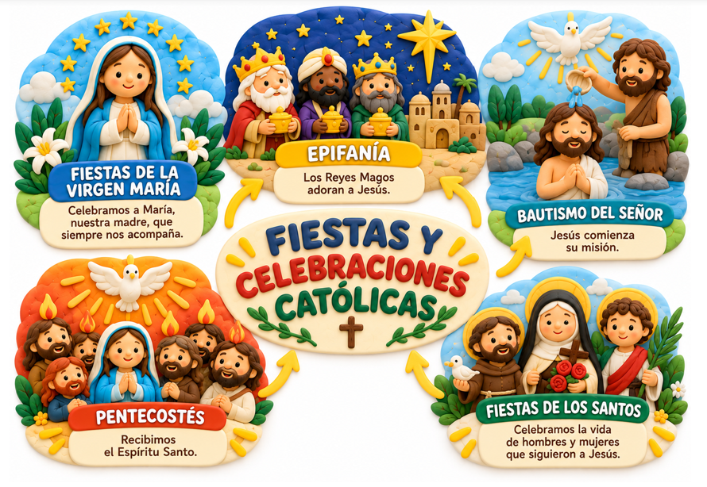

APRENDE Y DESCUBRE
Descubre los tiempos litúrgicos y las fiestas que celebramos los cristianos.
Conoce los tiempos litúrgicos, sus colores y los momentos más importantes de la vida de Jesús.

Descubre las fiestas de Jesús, las celebraciones de la Virgen María y los santos.